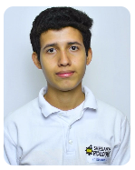

Portafolio de Proyectos
Marvin Javier Gutiérrez Coto

Sobre mí
Mi nombre es Marvin Javier Gutiérrez Coto, soy un estudiante de Tercer Año de Desarrollo de software del Instituto Técnico Ricaldone de El Salvador, en mis dos años de estudios he desarrollado la lógica de programación necesaria para desarrollar diferentes proyectos formativos con distintas tecnologías aprendidas conforme se van desarrollando los distintos contenidos de los programas, mi objetivo es seguir desarrollando mi aprendizaje en este ámbito y poder ejercerme profesionalmente
Last updated 3 mins ago